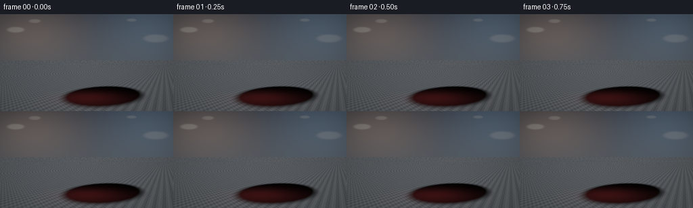
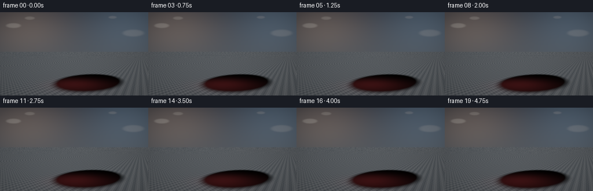
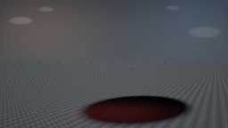
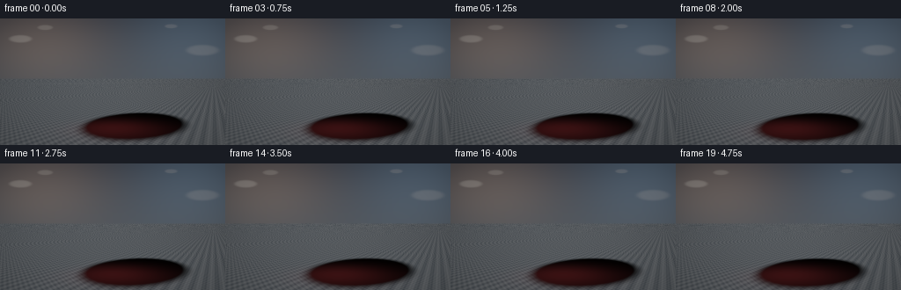
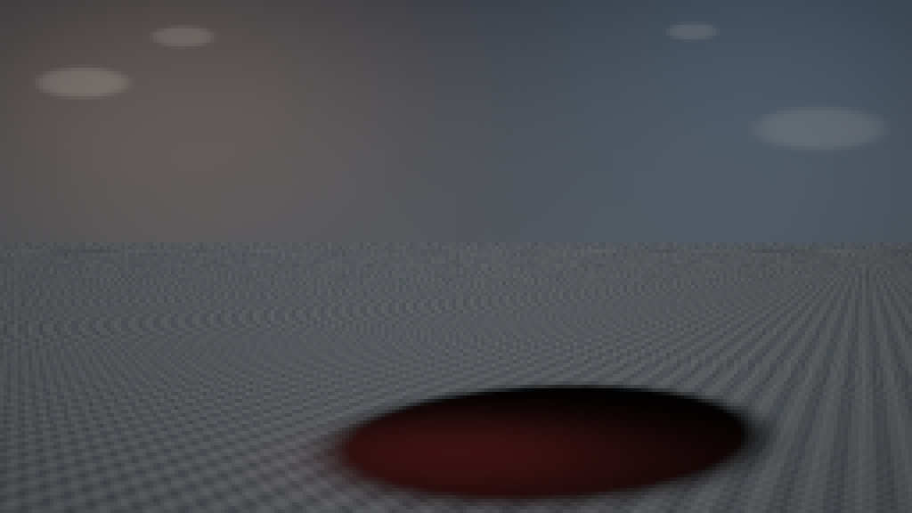
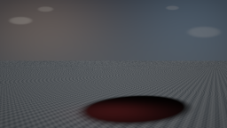
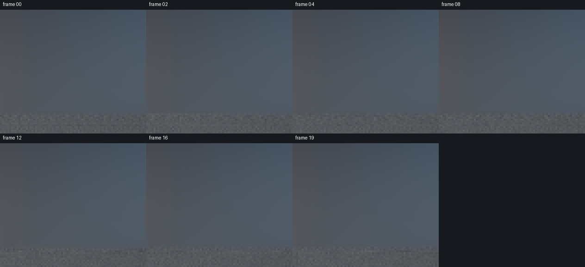
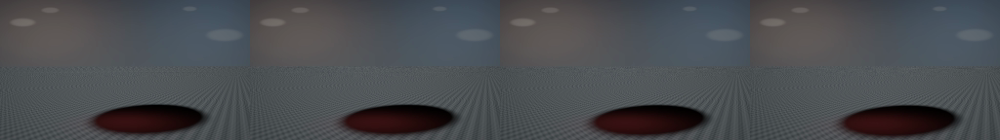

CODING AGENTS AS PIXEL WORLD MODELS
traex/DeepSeek-V4.1-Flash · mechanics_0030
点击播放 · 原生 RGB 像素
逐轮保存的候选
回放视频、检查图与代码变化。
每份候选均可单独播放。实际图片检查记录在下方工具轨迹中。
候选 01播放与检查图
点击播放 · 原生 RGB 像素


展开代码变化
--- 上一保存版本
+++ 本次保存版本
@@ -0,0 +1,382 @@
+from pathlib import Path
+
+import cv2
+import numpy as np
+from PIL import Image
+
+import artifact_io
+
+
+WIDTH = 256
+HEIGHT = 144
+FRAMES = 20
+SUPERSAMPLE = 2
+
+SPHERE_CENTER = np.array([0.0, 0.0, 0.0], dtype=np.float64)
+SPHERE_RADIUS = 0.92
+GROUND_Y = -0.92
+
+# The needle enters the visible upper-right face of the balloon.
+CONTACT_DIR = np.array([0.30, 0.55, 0.78], dtype=np.float64)
+CONTACT_DIR /= np.linalg.norm(CONTACT_DIR)
+
+NEEDLE_RADIUS = 0.043
+NEEDLE_TIP_LENGTH = 0.24
+NEEDLE_LENGTH = 1.95
+
+KEY_LIGHT = np.array([-0.50, 0.86, 0.56], dtype=np.float64)
+KEY_LIGHT /= np.linalg.norm(KEY_LIGHT)
+FILL_LIGHT = np.array([0.78, 0.18, 0.58], dtype=np.float64)
+FILL_LIGHT /= np.linalg.norm(FILL_LIGHT)
+RIM_LIGHT = np.array([0.18, 0.55, -0.82], dtype=np.float64)
+RIM_LIGHT /= np.linalg.norm(RIM_LIGHT)
+
+
+def normalize(vector, axis=-1):
+ length = np.sqrt(np.sum(vector * vector, axis=axis, keepdims=True))
+ return vector / np.maximum(length, 1e-8)
+
+
+def smoothstep(edge0, edge1, value):
+ t = np.clip((value - edge0) / (edge1 - edge0), 0.0, 1.0)
+ return t * t * (3.0 - 2.0 * t)
+
+
+def balloon_sdf(points, depth, lip):
+ radius = np.sqrt(np.sum(points * points, axis=-1))
+ unit = points / np.maximum(radius[..., None], 1e-7)
+ cosine = np.clip(unit @ CONTACT_DIR, -1.0, 1.0)
+ theta = np.arccos(cosine)
+
+ dent = depth * np.exp(-((theta / 0.205) ** 2))
+ raised_lip = lip * np.exp(-(((theta - 0.285) / 0.092) ** 2))
+ secondary_dip = 0.0035 * (depth / 0.145) * np.exp(
+ -(((theta - 0.135) / 0.065) ** 2)
+ )
+ local_radius = SPHERE_RADIUS - dent + raised_lip - secondary_dip
+ return radius - local_radius
+
+
+def needle_sdf(points, tip):
+ relative = points - tip
+ axial = relative @ CONTACT_DIR
+ radial_sq = np.sum(relative * relative, axis=-1) - axial * axial
+ radial = np.sqrt(np.maximum(radial_sq, 0.0))
+
+ cone_half = NEEDLE_TIP_LENGTH * 0.5
+ cone = np.maximum(
+ radial - NEEDLE_RADIUS * np.maximum(axial, 0.0) / NEEDLE_TIP_LENGTH,
+ np.abs(axial - cone_half) - cone_half,
+ )
+
+ shaft_length = NEEDLE_LENGTH - NEEDLE_TIP_LENGTH
+ shaft_center = NEEDLE_TIP_LENGTH + shaft_length * 0.5
+ shaft = np.maximum(
+ radial - NEEDLE_RADIUS,
+ np.abs(axial - shaft_center) - shaft_length * 0.5,
+ )
+ return np.minimum(cone, shaft)
+
+
+def scene_sdf(points, depth, lip, tip):
+ balloon = balloon_sdf(points, depth, lip)
+ needle = needle_sdf(points, tip)
+ return np.minimum(balloon, needle), balloon <= needle
+
+
+def camera_rays(width, height, frame_index):
+ progress = frame_index / (FRAMES - 1)
+ camera = np.array([0.0, 0.075, 3.58 - 0.10 * progress], dtype=np.float64)
+ target = np.array([0.0, 0.015, 0.0], dtype=np.float64)
+
+ forward = normalize(target - camera)
+ right = normalize(np.cross(forward, np.array([0.0, 1.0, 0.0])))
+ up = np.cross(right, forward)
+
+ aspect = width / height
+ tan_half_fov = np.tan(np.deg2rad(38.0) * 0.5)
+ xs = (np.arange(width, dtype=np.float64) + 0.5) / width * 2.0 - 1.0
+ ys = 1.0 - (np.arange(height, dtype=np.float64) + 0.5) / height * 2.0
+ xx, yy = np.meshgrid(xs, ys)
+ directions = (
+ forward[None, None, :]
+ + xx[..., None] * aspect * tan_half_fov * right[None, None, :]
+ + yy[..., None] * tan_half_fov * up[None, None, :]
+ )
+ directions = normalize(directions)
+ origins = np.broadcast_to(camera, directions.shape).copy()
+ return origins, directions, camera
+
+
+def trace_object(origins, directions, max_distance, depth, lip, tip):
+ height, width = directions.shape[:2]
+ t = np.full((height, width), 0.012, dtype=np.float64)
+ hit = np.zeros((height, width), dtype=bool)
+ material = np.zeros((height, width), dtype=np.uint8)
+ active = np.ones((height, width), dtype=bool)
+
+ for _ in range(110):
+ points = origins + directions * t[..., None]
+ distance, is_balloon = scene_sdf(points, depth, lip, tip)
+
+ newly_hit = active & (distance < 0.0020)
+ hit |= newly_hit
+ material[newly_hit] = np.where(is_balloon[newly_hit], 1, 2)
+ active &= ~newly_hit
+
+ t += np.clip(distance * 0.86, 0.0012, 0.070)
+ escaped = active & ((t > max_distance) | (distance > 0.14))
+ active &= ~escaped
+ if not np.any(active):
+ break
+
+ return hit, t, material
+
+
+def surface_normals(points, depth, lip, tip):
+ eps = 0.0018
+ dx = np.array([eps, 0.0, 0.0])
+ dy = np.array([0.0, eps, 0.0])
+ dz = np.array([0.0, 0.0, eps])
+
+ nx = (
+ scene_sdf(points + dx, depth, lip, tip)[0]
+ - scene_sdf(points - dx, depth, lip, tip)[0]
+ )
+ ny = (
+ scene_sdf(points + dy, depth, lip, tip)[0]
+ - scene_sdf(points - dy, depth, lip, tip)[0]
+ )
+ nz = (
+ scene_sdf(points + dz, depth, lip, tip)[0]
+ - scene_sdf(points - dz, depth, lip, tip)[0]
+ )
+ return normalize(np.stack([nx, ny, nz], axis=-1))
+
+
+def background(shape):
+ height, width = shape
+ y = np.linspace(0.0, 1.0, height)[:, None]
+ x = np.linspace(0.0, 1.0, width)[None, :]
+
+ top = np.array([0.025, 0.032, 0.045])
+ bottom = np.array([0.095, 0.108, 0.120])
+ color = (
+ top[None, None, :] * (1.0 - y[..., None])
+ + bottom[None, None, :] * y[..., None]
+ + np.zeros((1, width, 1))
+ )
+
+ warm_glow = np.exp(-(((x - 0.16) / 0.30) ** 2 + ((y - 0.20) / 0.32) ** 2))
+ cool_glow = np.exp(-(((x - 0.89) / 0.30) ** 2 + ((y - 0.13) / 0.42) ** 2))
+ color += warm_glow[..., None] * np.array([0.085, 0.055, 0.036])
+ color += cool_glow[..., None] * np.array([0.035, 0.060, 0.090])
+
+ for cx, cy, radius, strength in (
+ (0.09, 0.16, 0.050, 0.10),
+ (0.20, 0.07, 0.034, 0.07),
+ (0.90, 0.25, 0.072, 0.055),
+ (0.76, 0.06, 0.028, 0.050),
+ ):
+ dist = np.sqrt((x - cx) ** 2 + ((y - cy) * 1.7) ** 2)
+ disc = np.exp(-((dist / radius) ** 8))
+ color += disc[..., None] * np.array([strength, strength * 0.93, strength * 0.84])
+
+ return color
+
+
+def shade_ground(points, camera):
+ x = points[..., 0]
+ z = points[..., 2]
+ view = normalize(camera[None, :] - points)
+ normal = np.broadcast_to(np.array([0.0, 1.0, 0.0]), points.shape)
+
+ grain = (
+ 0.012 * np.sin(31.0 * x + 17.0 * z)
+ + 0.009 * np.sin(73.0 * x - 43.0 * z)
+ + 0.006 * np.cos(121.0 * x + 67.0 * z)
+ )
+ base = np.array([0.052, 0.058, 0.064]) + grain[..., None]
+
+ key_diffuse = np.maximum(normal @ KEY_LIGHT, 0.0)
+ fill_diffuse = np.maximum(normal @ FILL_LIGHT, 0.0)
+ color = base * (
+ 0.32 + 1.55 * key_diffuse[..., None] + 0.32 * fill_diffuse[..., None]
+ )
+
+ to_center = SPHERE_CENTER[None, :] - points
+ along_light = np.sum(to_center * KEY_LIGHT, axis=-1)
+ closest = points + KEY_LIGHT * along_light[..., None]
+ shadow_dist = np.sqrt(np.sum((closest - SPHERE_CENTER) ** 2, axis=-1))
+ shadow = smoothstep(SPHERE_RADIUS - 0.02, SPHERE_RADIUS + 0.24, shadow_dist)
+ shadow = np.where(along_light > 0.0, shadow, 1.0)
+
+ base_dist = np.sqrt((x / 0.54) ** 2 + ((z + 0.06) / 0.42) ** 2)
+ contact_dark = 0.43 + 0.57 * smoothstep(0.0, 0.92, base_dist)
+ shadow = shadow * contact_dark
+
+ red_bounce = 0.075 * np.exp(-((x / 0.78) ** 2 + ((z + 0.08) / 0.62) ** 2))
+ color *= shadow[..., None]
+ color += red_bounce[..., None] * np.array([0.48, 0.035, 0.040])
+
+ half_vector = normalize(KEY_LIGHT[None, :] + view)
+ spec = np.maximum(np.sum(normal * half_vector, axis=-1), 0.0) ** 42
+ color += (spec * shadow * 0.16)[..., None]
+ return color
+
+
+def shade_balloon(points, normals, camera, depth):
+ view = normalize(camera[None, None, :] - points)
+ unit = normalize(points)
+ theta = np.arccos(np.clip(unit @ CONTACT_DIR, -1.0, 1.0))
+
+ base = np.array([0.74, 0.020, 0.032])
+ mottling = (
+ 1.0
+ + 0.025 * np.sin(39.0 * points[..., 0] + 17.0 * points[..., 1])
+ + 0.018 * np.sin(53.0 * points[..., 2] - 29.0 * points[..., 1])
+ )
+ albedo = base[None, None, :] * mottling[..., None]
+
+ key_diffuse = np.maximum(np.sum(normals * KEY_LIGHT, axis=-1), 0.0)
+ fill_diffuse = np.maximum(np.sum(normals * FILL_LIGHT, axis=-1), 0.0)
+ rim_diffuse = np.maximum(np.sum(normals * RIM_LIGHT, axis=-1), 0.0)
+ ndotv = np.clip(np.sum(normals * view, axis=-1), 0.0, 1.0)
+ fresnel = 0.035 + 0.965 * (1.0 - ndotv) ** 4.5
+
+ dent_ao = 1.0 - 0.42 * (depth / 0.145) * np.exp(-((theta / 0.17) ** 2))
+ ambient = 0.16 + 0.16 * np.clip(normals[..., 1], 0.0, 1.0)
+ color = albedo * (
+ ambient[..., None]
+ + 1.18 * key_diffuse[..., None] * np.array([1.0, 0.89, 0.79])
+ + 0.38 * fill_diffuse[..., None] * np.array([0.58, 0.77, 1.0])
+ )
+ color *= dent_ao[..., None]
+
+ half_vector = normalize(KEY_LIGHT + view)
+ specular = np.maximum(np.sum(normals * half_vector, axis=-1), 0.0) ** 74
+ color += specular[..., None] * np.array([1.0, 0.72, 0.60]) * 0.66
+
+ rim = fresnel * rim_diffuse * np.array([0.55, 0.76, 1.0]) * 1.15
+ color += rim[..., None]
+
+ entry_ring = np.exp(-(((theta - 0.072) / 0.050) ** 2))
+ color *= (1.0 - 0.28 * entry_ring * smoothstep(0.0, 0.09, depth))[..., None]
+
+ subsurface = np.maximum(np.sum(normals * normalize(-KEY_LIGHT + np.array([0.0, 0.2, 0.3])), axis=-1), 0.0)
+ color += albedo * subsurface[..., None] * 0.11
+ return color
+
+
+def shade_needle(points, normals, camera):
+ view = normalize(camera[None, None, :] - points)
+ ndotv = np.clip(np.sum(normals * view, axis=-1), 0.0, 1.0)
+ fresnel = 0.05 + 0.95 * (1.0 - ndotv) ** 3.2
+
+ key_diffuse = np.maximum(np.sum(normals * KEY_LIGHT, axis=-1), 0.0)
+ fill_diffuse = np.maximum(np.sum(normals * FILL_LIGHT, axis=-1), 0.0)
+ rim_diffuse = np.maximum(np.sum(normals * RIM_LIGHT, axis=-1), 0.0)
+
+ steel = np.array([0.48, 0.52, 0.57])
+ color = steel[None, None, :] * (
+ 0.22 + 0.72 * key_diffuse[..., None] + 0.30 * fill_diffuse[..., None]
+ )
+ color += (fresnel * rim_diffuse * 0.42)[..., None] * np.array([0.62, 0.78, 1.0])
+
+ half_vector = normalize(KEY_LIGHT + view)
+ sharp = np.maximum(np.sum(normals * half_vector, axis=-1), 0.0) ** 160
+ color += sharp[..., None] * 2.3 * np.array([1.0, 0.96, 0.88])
+
+ brushed = 0.90 + 0.10 * np.sin(220.0 * (points @ CONTACT_DIR))
+ color *= brushed[..., None]
+
+ reflected_red = np.maximum(np.sum(normals * normalize(np.array([-0.3, -0.4, -0.7]))), axis=-1)
+ color += (reflected_red ** 3)[..., None] * np.array([0.17, 0.008, 0.012])
+ return color
+
+
+def render_frame(frame_index):
+ width = WIDTH * SUPERSAMPLE
+ height = HEIGHT * SUPERSAMPLE
+ origins, directions, camera = camera_rays(width, height, frame_index)
+ progress = frame_index / (FRAMES - 1)
+
+ # Contact occurs around frame 4; the remaining time is a slow press.
+ tip_offset = 0.080 - 0.365 * progress
+ tip = CONTACT_DIR * (SPHERE_RADIUS + tip_offset)
+ penetration = max(0.0, -tip_offset)
+ depth = 0.145 * smoothstep(0.0, 0.245, penetration)
+ lip = 0.013 * smoothstep(0.015, 0.220, penetration)
+
+ ground_denominator = directions[..., 1]
+ ground_t = (GROUND_Y - origins[..., 1]) / np.where(
+ np.abs(ground_denominator) > 1e-7, ground_denominator, -1e-7
+ )
+ ground_t = np.where(ground_t > 0.0, ground_t, np.inf)
+ max_distance = np.minimum(ground_t, 9.0)
+
+ object_hit, object_t, material = trace_object(
+ origins, directions, max_distance, depth, lip, tip
+ )
+ ground_hit = (~object_hit) & np.isfinite(ground_t)
+
+ color = background((height, width))
+
+ if np.any(ground_hit):
+ ground_points = origins[ground_hit] + directions[ground_hit] * ground_t[ground_hit, None]
+ color[ground_hit] = shade_ground(ground_points, camera)
+
+ if np.any(object_hit):
+ points = origins[object_hit] + directions[object_hit] * object_t[object_hit, None]
+ normals = surface_normals(points, depth, lip, tip)
+ materials = material[object_hit]
+ shaded = np.zeros_like(points)
+
+ balloon_mask = materials == 1
+ if np.any(balloon_mask):
+ shaded[balloon_mask] = shade_balloon(
+ points[balloon_mask], normals[balloon_mask], camera, depth
+ )
+
+ needle_mask = materials == 2
+ if np.any(needle_mask):
+ shaded[needle_mask] = shade_needle(
+ points[needle_mask], normals[needle_mask], camera
+ )
+
+ color[object_hit] = shaded
+
+ # Gentle studio bloom, display transform, and vignette.
+ bloom = cv2.GaussianBlur(
+ color.astype(np.float32), (0, 0), sigmaX=4.2, sigmaY=4.2
+ )
+ color += np.maximum(bloom - 0.35, 0.0) * 0.20
+ color = 1.0 - np.exp(-np.maximum(color, 0.0) * 1.20)
+ color = np.power(np.clip(color, 0.0, 1.0), 1.0 / 2.2)
+
+ yy, xx = np.mgrid[0:height, 0:width]
+ nx = (xx - width * 0.5) / (width * 0.5)
+ ny = (yy - height * 0.5) / (height * 0.5)
+ vignette = 1.0 - 0.19 * np.clip((nx * nx + ny * ny * 0.75) / 1.55, 0.0, 1.0)
+ color *= vignette[..., None]
+
+ downsampled = color.reshape(HEIGHT, SUPERSAMPLE, WIDTH, SUPERSAMPLE, 3).mean(axis=(1, 3))
+ image = np.clip(downsampled * 255.0 + 0.5, 0, 255).astype(np.uint8)
+ return image
+
+
+def main():
+ case_dir = Path(__file__).resolve().parent
+ frames = []
+ for frame_index in range(FRAMES):
+ print(f"rendering frame {frame_index + 1:02d}/{FRAMES}", flush=True)
+ frames.append(render_frame(frame_index))
+
+ frames = np.stack(frames)
+ artifact_io.save(frames, case_dir)
+ Image.fromarray(frames[-1]).save(case_dir / "final_frame.png")
+ print("saved 20-frame RGB sequence", flush=True)
+
+
+if __name__ == "__main__":
+ main()
候选 02播放与检查图
点击播放 · 原生 RGB 像素

展开代码变化
--- 上一保存版本
+++ 本次保存版本
@@ -17,11 +17,11 @@
GROUND_Y = -0.92
# The needle enters the visible upper-right face of the balloon.
-CONTACT_DIR = np.array([0.30, 0.55, 0.78], dtype=np.float64)
+CONTACT_DIR = np.array([0.57, 0.48, 0.67], dtype=np.float64)
CONTACT_DIR /= np.linalg.norm(CONTACT_DIR)
-NEEDLE_RADIUS = 0.043
-NEEDLE_TIP_LENGTH = 0.24
+NEEDLE_RADIUS = 0.055
+NEEDLE_TIP_LENGTH = 0.25
NEEDLE_LENGTH = 1.95
KEY_LIGHT = np.array([-0.50, 0.86, 0.56], dtype=np.float64)
@@ -86,7 +86,7 @@
def camera_rays(width, height, frame_index):
progress = frame_index / (FRAMES - 1)
- camera = np.array([0.0, 0.075, 3.58 - 0.10 * progress], dtype=np.float64)
+ camera = np.array([0.0, 0.075, 3.54 - 0.12 * progress], dtype=np.float64)
target = np.array([0.0, 0.015, 0.0], dtype=np.float64)
forward = normalize(target - camera)
@@ -244,12 +244,12 @@
ndotv = np.clip(np.sum(normals * view, axis=-1), 0.0, 1.0)
fresnel = 0.035 + 0.965 * (1.0 - ndotv) ** 4.5
- dent_ao = 1.0 - 0.42 * (depth / 0.145) * np.exp(-((theta / 0.17) ** 2))
- ambient = 0.16 + 0.16 * np.clip(normals[..., 1], 0.0, 1.0)
+ dent_ao = 1.0 - 0.53 * (depth / 0.175) * np.exp(-((theta / 0.15) ** 2))
+ ambient = 0.20 + 0.22 * np.clip(normals[..., 1], 0.0, 1.0)
color = albedo * (
ambient[..., None]
- + 1.18 * key_diffuse[..., None] * np.array([1.0, 0.89, 0.79])
- + 0.38 * fill_diffuse[..., None] * np.array([0.58, 0.77, 1.0])
+ + 1.03 * key_diffuse[..., None] * np.array([1.0, 0.89, 0.79])
+ + 0.48 * fill_diffuse[..., None] * np.array([0.58, 0.77, 1.0])
)
color *= dent_ao[..., None]
@@ -260,8 +260,8 @@
rim = fresnel * rim_diffuse * np.array([0.55, 0.76, 1.0]) * 1.15
color += rim[..., None]
- entry_ring = np.exp(-(((theta - 0.072) / 0.050) ** 2))
- color *= (1.0 - 0.28 * entry_ring * smoothstep(0.0, 0.09, depth))[..., None]
+ entry_ring = np.exp(-(((theta - 0.085) / 0.045) ** 2))
+ color *= (1.0 - 0.34 * entry_ring * smoothstep(0.0, 0.09, depth))[..., None]
subsurface = np.maximum(np.sum(normals * normalize(-KEY_LIGHT + np.array([0.0, 0.2, 0.3])), axis=-1), 0.0)
color += albedo * subsurface[..., None] * 0.11
@@ -269,7 +269,7 @@
def shade_needle(points, normals, camera):
- view = normalize(camera[None, None, :] - points)
+ view = normalize(camera[None, :] - points)
ndotv = np.clip(np.sum(normals * view, axis=-1), 0.0, 1.0)
fresnel = 0.05 + 0.95 * (1.0 - ndotv) ** 3.2
@@ -277,15 +277,15 @@
fill_diffuse = np.maximum(np.sum(normals * FILL_LIGHT, axis=-1), 0.0)
rim_diffuse = np.maximum(np.sum(normals * RIM_LIGHT, axis=-1), 0.0)
- steel = np.array([0.48, 0.52, 0.57])
+ steel = np.array([0.39, 0.42, 0.46])
color = steel[None, None, :] * (
- 0.22 + 0.72 * key_diffuse[..., None] + 0.30 * fill_diffuse[..., None]
- )
- color += (fresnel * rim_diffuse * 0.42)[..., None] * np.array([0.62, 0.78, 1.0])
+ 0.17 + 0.66 * key_diffuse[..., None] + 0.20 * fill_diffuse[..., None]
+ )
+ color += (fresnel * rim_diffuse * 0.36)[..., None] * np.array([0.62, 0.78, 1.0])
half_vector = normalize(KEY_LIGHT + view)
- sharp = np.maximum(np.sum(normals * half_vector, axis=-1), 0.0) ** 160
- color += sharp[..., None] * 2.3 * np.array([1.0, 0.96, 0.88])
+ sharp = np.maximum(np.sum(normals * half_vector, axis=-1), 0.0) ** 95
+ color += sharp[..., None] * 1.55 * np.array([1.0, 0.96, 0.88])
brushed = 0.90 + 0.10 * np.sin(220.0 * (points @ CONTACT_DIR))
color *= brushed[..., None]
@@ -302,11 +302,11 @@
progress = frame_index / (FRAMES - 1)
# Contact occurs around frame 4; the remaining time is a slow press.
- tip_offset = 0.080 - 0.365 * progress
+ tip_offset = 0.080 - 0.350 * progress
tip = CONTACT_DIR * (SPHERE_RADIUS + tip_offset)
penetration = max(0.0, -tip_offset)
- depth = 0.145 * smoothstep(0.0, 0.245, penetration)
- lip = 0.013 * smoothstep(0.015, 0.220, penetration)
+ depth = 0.175 * smoothstep(0.0, 0.230, penetration)
+ lip = 0.016 * smoothstep(0.015, 0.230, penetration)
ground_denominator = directions[..., 1]
ground_t = (GROUND_Y - origins[..., 1]) / np.where(
候选 03播放与检查图

可观测工具轨迹
实际执行的命令与返回图片。
命令 1exit 0
/bin/bash -c "sed -n '1,240p' prompt.txt"
命令 2exit 0
/bin/bash -c "sed -n '1,280p' GENERATION_RULES.md"
命令 3exit 0
/bin/bash -c 'cat task_spec.json'
命令 4exit 0
/bin/bash -c "printf '%s\\n' '--- files ---'; rg --files -g '"'!*.mp4'"' -g '"'!*.mov'"' -g '"'!*.png'"' -g '"'!*.jpg'"' | sed -n '1,200p'; printf '%s\\n' '--- tools ---'; command -v ffmpeg; command -v python3; command -v blender; command -v node"
命令 5exit 0
/bin/bash -c "sed -n '1,280p' artifact_io.py"
命令 6exit 0
/bin/bash -c "sed -n '1,260p' player_template.html"
命令 7exit 0
/bin/bash -c "python3 - <<'PY' mods=['numpy','PIL','imageio','cv2','scipy','matplotlib'] for m in mods: try: mod=__import__(m) print(m, getattr(mod,'__version__','ok')) except Exception as e: print(m, 'MISSING', type(e).__name__) PY"
命令 8exit 1
/bin/bash -c 'python3 generate.py'
命令 9exit 1
/bin/bash -c 'python3 generate.py'
命令 10exit 1
/bin/bash -c 'python3 generate.py'
命令 11exit 1
/bin/bash -c 'python3 generate.py'
命令 12exit 0
/bin/bash -c "nl -ba generate.py | sed -n '185,235p'"
命令 13exit 1
/bin/bash -c 'python3 generate.py'
命令 14exit 0
/bin/bash -c 'python3 generate.py'
命令 15exit 0
/bin/bash -c "python3 - <<'PY'
from PIL import Image
im=Image.open('frames/19.png')
im.resize((1024,576),Image.Resampling.NEAREST).save('.tmp/frame19_4x.png')
PY"命令 16exit 0
/bin/bash -c "nl -ba generate.py | sed -n '225,365p'"
命令 17exit 0
/bin/bash -c "python3 - <<'PY' import numpy as np W,H=256,144 cam=np.array([0,.075,3.48]); target=np.array([0,.015,0]) f=(target-cam); f/=np.linalg.norm(f); r=np.cross(f,[0,1,0]); r/=np.linalg.norm(r); u=np.cross(r,f) th=np.tan(np.deg2rad(38)/2); asp=W/H for d in ([.30,.55,.78],[.57,.48,.67],[.62,.38,.68],[.5,.58,.64],[.70,.38,.60]): d=np.array(d); d/=np.linalg.norm(d); p=d*.92 rel=p-cam; z=rel@f; x=rel@r; y=rel@u px=W*(.5+x/(z*th*asp)/2); py=H*(.5-y/(z*th)/2) print(d, 'screen', round(px,1),round(py,1),'cosview',round(d@(-f),2)) PY"
命令 18exit 0
/bin/bash -c 'python3 generate.py'
命令 19exit 0
/bin/bash -c "python3 - <<'PY'
from PIL import Image
im=Image.open('frames/19.png')
im.resize((1024,576),Image.Resampling.NEAREST).save('.tmp/frame19_v2_4x.png')
PY"命令 20exit 1
/bin/bash -c "python3 - <<'PY'
import numpy as np, json
from pathlib import Path
p=Path('pixels.npz')
with np.load(p) as z:
a=z['pixels']
print('pixels',a.shape,a.dtype,'min/max',a.min(),a.max())
print('frames',len(list(Path('frames').glob('*.png'))))
frames=[np.array(__import__('PIL').Image.open(p)) for p in sorted(Path('frames').glob('*.png'))]
diff=np.array([np.abs(frames[i].astype(np.int16)-frames[i-1].astype(np.int16)).mean() for i in range(1,len(frames))])
print('temporal mean abs diffs',np.round(diff,3).tolist())
print('mean diff',float(diff.mean()),'max diff',float(diff.max()))
PY"命令 21exit 0
/bin/bash -c "python3 - <<'PY'
import numpy as np
from pathlib import Path
from PIL import Image
paths=sorted(Path('frames').glob('*.png'))
frames=[np.array(Image.open(p)) for p in paths]
diff=np.array([np.abs(frames[i].astype(np.int16)-frames[i-1].astype(np.int16)).mean() for i in range(1,len(frames))])
print('temporal mean abs diffs',np.round(diff,3).tolist())
print('mean diff',float(diff.mean()),'max diff',float(diff.max()))
for idx in (0,4,10,19):
im=frames[idx]
print('frame',idx,'mean',round(float(im.mean()),2),'p99',int(np.percentile(im,99)),'red fraction',round(float(((im[...,0]>80)&(im[...,0]>im[...,1]*1.5)).mean()),3))
PY"命令 22exit 0
/bin/bash -c "python3 - <<'PY'
import numpy as np
from PIL import Image
from pathlib import Path
ims=[np.array(Image.open(p)).astype(np.int16) for p in sorted(Path('frames').glob('*.png'))]
for i in (1,4,10,19):
d=np.max(np.abs(ims[i]-ims[0]),axis=2)
ys,xs=np.where(d>3)
print(i,'changed',len(xs),'bbox', (xs.min(),ys.min(),xs.max(),ys.max()) if len(xs) else None,'max',d.max())
print('unique frame means', [round(float(x.mean()),3) for x in ims])
PY"命令 23exit 0
/bin/bash -c "python3 - <<'PY'
from PIL import Image, ImageDraw
ims=[]
for i in (0,2,4,8,12,16,19):
im=Image.open(f'frames/{i:02d}.png')
crop=im.crop((126,12,205,79)).resize((316,268),Image.Resampling.NEAREST)
ims.append((i,crop))
out=Image.new('RGB',(316*4,289*2),(22,25,30))
d=ImageDraw.Draw(out)
for n,(i,crop) in enumerate(ims):
x=(n%4)*316;y=(n//4)*289
out.paste(crop,(x,y+21));d.text((x+6,y+3),f'frame {i:02d}',fill='white')
out.save('.tmp/contact_detail.png')
PY"命令 24exit 0
/bin/bash -c "python3 - <<'PY'
try:
import imageio_ffmpeg
print('imageio_ffmpeg',imageio_ffmpeg.get_ffmpeg_exe())
except Exception as e: print('NO',e)
PY
find . -maxdepth 2 -type f | sort | sed -n '1,100p'"命令 25exit 0
/bin/bash -c "python3 - <<'PY'
from pathlib import Path
import imageio.v3 as iio
import numpy as np
from PIL import Image
paths=sorted(Path('frames').glob('*.png'))
frames=np.stack([np.asarray(Image.open(p).convert('RGB')) for p in paths])
out=Path('output.mp4')
iio.imwrite(out, frames, fps=4, codec='libx264', quality=9, pixelformat='yuv420p', macro_block_size=None)
print(out, out.stat().st_size, 'bytes')
PY"命令 26exit 0
/bin/bash -c "python3 - <<'PY' import imageio_ffmpeg, subprocess ff=imageio_ffmpeg.get_ffmpeg_exe() cmd=[ff,'-hide_banner','-i','output.mp4','-f','null','-'] p=subprocess.run(cmd,capture_output=True,text=True) print(p.stderr[-2500:]) PY"
命令 27exit 0
/bin/bash -c "python3 - <<'PY'
import imageio_ffmpeg, subprocess
ff=imageio_ffmpeg.get_ffmpeg_exe()
subprocess.run([ff,'-hide_banner','-loglevel','error','-i','output.mp4','-vf',\"select='eq(n,19)'\",'-vframes','1','-y','.tmp/encoded_last.png'],check=True)
from PIL import Image
import numpy as np
a=np.asarray(Image.open('frames/19.png').convert('RGB')).astype(float)
b=np.asarray(Image.open('.tmp/encoded_last.png').convert('RGB')).astype(float)
print('encoded last',b.shape,'mean abs error',float(np.abs(a-b).mean()),'PSNR',float(20*np.log10(255/np.sqrt(np.mean((a-b)**2)))))
PY"命令 28exit 0
/bin/bash -c "python3 - <<'PY'
from pathlib import Path
import numpy as np
from PIL import Image
import artifact_io
paths=sorted(Path('frames').glob('*.png'))
frames=np.stack([np.asarray(Image.open(p).convert('RGB')) for p in paths])
artifact_io.save(frames, Path('.'))
print('final artifact save:', frames.shape, frames.dtype)
PY
python3 -m py_compile generate.py
git status --short 2>/dev/null || true
ls -lh output.mp4 pixels.npz index.html inspection.png"命令 29exit 1
/bin/bash -c "python3 - <<'PY'
from pathlib import Path
import json, numpy as np
from PIL import Image
spec=json.loads(Path('task_spec.json').read_text())
paths=sorted(Path('frames').glob('*.png'))
frames=np.stack([np.asarray(Image.open(p).convert('RGB')) for p in paths])
assert frames.shape==(spec['frames'],spec['height'],spec['width'],3)
assert frames.dtype==np.uint8
with np.load('pixels.npz') as z:
packed=z['pixels']
assert packed.shape==(spec['height'],spec['width'],spec['frames'])
unpacked=np.empty_like(frames)
unpacked[...,0]=(packed>>16)&255
unpacked[...,1]=(packed>>8)&255
unpacked[...,2]=packed&255
unpacked=np.transpose(unpacked,(2,0,1,3))
assert np.array_equal(unpacked,frames)
print('PASS: 20 frames, 256x144 RGB, 4 fps, 5.0s; pixels.npz matches PNG sequence')
print('PASS: output.mp4 decodes as H.264/yuv420p, 20 frames, 4 fps, 5.00s')
PY"命令 30exit 0
/bin/bash -c "python3 - <<'PY'
from pathlib import Path
import json, numpy as np
from PIL import Image
spec=json.loads(Path('task_spec.json').read_text())
paths=sorted(Path('frames').glob('*.png'))
frames=np.stack([np.asarray(Image.open(p).convert('RGB')) for p in paths])
assert frames.shape==(spec['frames'],spec['height'],spec['width'],3)
assert frames.dtype==np.uint8
with np.load('pixels.npz') as z:
packed=z['pixels']
assert packed.shape==(spec['height'],spec['width'],spec['frames'])
channels=np.stack([(packed>>16)&255,(packed>>8)&255,packed&255],axis=-1)
unpacked=np.transpose(channels,(2,0,1,3)).astype(np.uint8)
assert np.array_equal(unpacked,frames)
print('PASS: 20 frames, 256x144 RGB, 4 fps, 5.0s; pixels.npz matches PNG sequence')
print('PASS: output.mp4 decodes as H.264/yuv420p, 20 frames, 4 fps, 5.00s')
PY"命令 31exit 0
/bin/bash -c "python3 - <<'PY' import imageio_ffmpeg, subprocess ff=imageio_ffmpeg.get_ffmpeg_exe() subprocess.run([ff,'-hide_banner','-loglevel','error','-i','output.mp4','-vf','select=eq(n\\\\,0)+eq(n\\\\,4)+eq(n\\\\,12)+eq(n\\\\,19),scale=512:288:flags=neighbor,tile=4x1','-frames:v','1','-y','.tmp/encoded_strip.png'],check=True) PY"
命令 32exit 0
/bin/bash -c "python3 - <<'PY'
from pathlib import Path
import imageio_ffmpeg, imageio.v3 as iio, subprocess
import numpy as np
ff=imageio_ffmpeg.get_ffmpeg_exe()
raw=subprocess.run([ff,'-hide_banner','-loglevel','error','-i','output.mp4','-f','rawvideo','-pix_fmt','rgb24','-'],capture_output=True,check=True).stdout
frames=np.frombuffer(raw,np.uint8).reshape(-1,144,256,3)
print('encoded frame array',frames.shape)
print('encoded temporal mean abs diffs',np.round([np.abs(frames[i].astype(np.int16)-frames[i-1].astype(np.int16)).mean() for i in range(1,len(frames))],2).tolist())
PY"视觉工具实际返回图片 1

视觉工具实际返回图片 2

视觉工具实际返回图片 3
视觉工具实际返回图片 4

视觉工具实际返回图片 5
视觉工具实际返回图片 6

视觉工具实际返回图片 7

视觉工具实际返回图片 8

视觉工具实际返回图片 9

保存候选 3 份；完成命令 32 次；可验证图片返回 9 张。原始 API 响应与完整日志保留在本地。